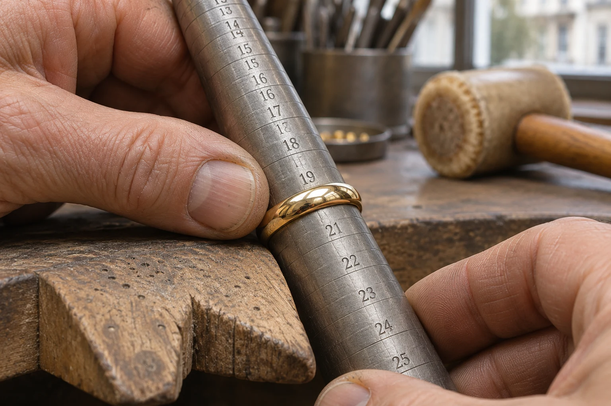

Ring resizing
Our Asia workshop offers repair and resizing for £130, taking 2–3 months. For resizing or minor adjustments, we can recommend reputable local UK jewellers at your own expense.
LONDON ATELIER
A ring that needs a new fit, a loose stone or a worn setting can often be given a second life. Our atelier assesses the piece and quotes for the work it can carry out.

Our Asia workshop offers repair and resizing for £130, taking 2–3 months. For resizing or minor adjustments, we can recommend reputable local UK jewellers at your own expense.
Whether you want to add a stone, replace a missing one or change its size, we inspect the setting and explain any work needed to support it.
Ask about loose stones, worn claws, damaged clasps, professional cleaning or polishing. If a stone moves, set the piece aside until it can be inspected.
Send a clear photo of the whole piece, a close-up of the area and a short description of what you would like changed. We will tell you if an in-person inspection is needed. Paid work begins once you approve the quote.